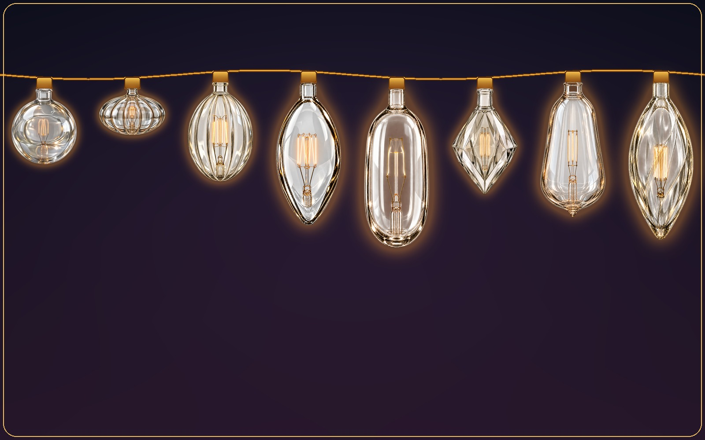
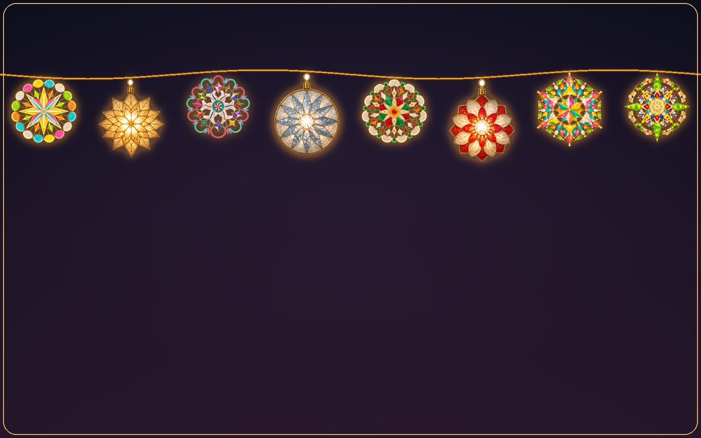
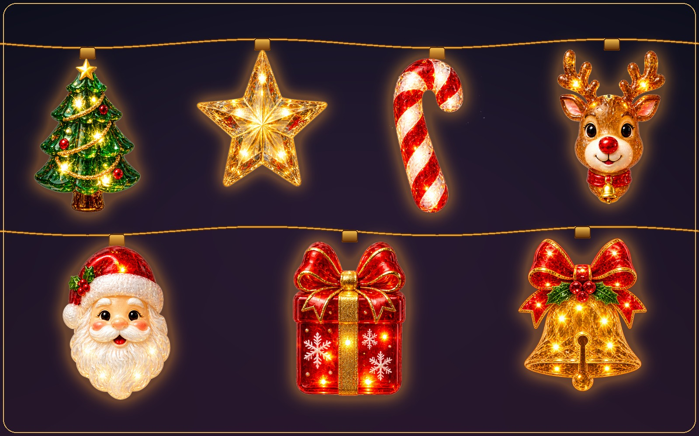

Basic Lights
Your screen, framed in light.
Place the included bulb styles around every edge of your Mac, choose their size and colors, then let them glow, twinkle, or blink behind your work.

Small app. Big atmosphere.
Every control is close at hand in the menu bar, while the lights stay quietly behind your work.
Basic Lights
Place the included bulb styles around every edge of your Mac, choose their size and colors, then let them glow, twinkle, or blink behind your work.

Vintage Glass Bulbs
A separate bulb shape with softer, old-world silhouettes—layer it onto any collection for a warmer, antique look.

Everyday Joy
Bright, playful designs give an ordinary workday a little more personality.

Premium Capiz Parols
Switch from classic bulbs to handcrafted looks drawn from the collections available in the app.

Seasonal collections
Coordinated bulbs, garlands, wreaths, and greetings in selected collections make your desktop feel ready for the season.
Everything within reach
Fine-tune how Desktop Lights looks and behaves without turning decoration into a distraction.
Turn lights on or off and switch looks without opening a full-size app.
Decorate the main display or bring the same atmosphere across your setup.
Frame all sides or select the top, bottom, left, or right edges.
Choose a size that feels subtle, balanced, or joyfully oversized, or add the Vintage Glass Bulbs shape for a warmer, antique look.
Use warm classics, coordinated color sets, or collection-specific tones.
Running lights, alternating glow, twinkle, all-blink, and steady light.
Slow the scene down for calm or make it lively for celebrations.
Selected collections add matching decorative layers around the bulbs.
Display coordinated greeting designs included with select seasonal collections.
Toggle the lights quickly without interrupting your current task.
Have your preferred lights ready when you start your Mac.
Installed collections and saved preferences remain ready without a constant connection.
Basic Lights and Everyday Joy are included, with handcrafted collections available when you want more.